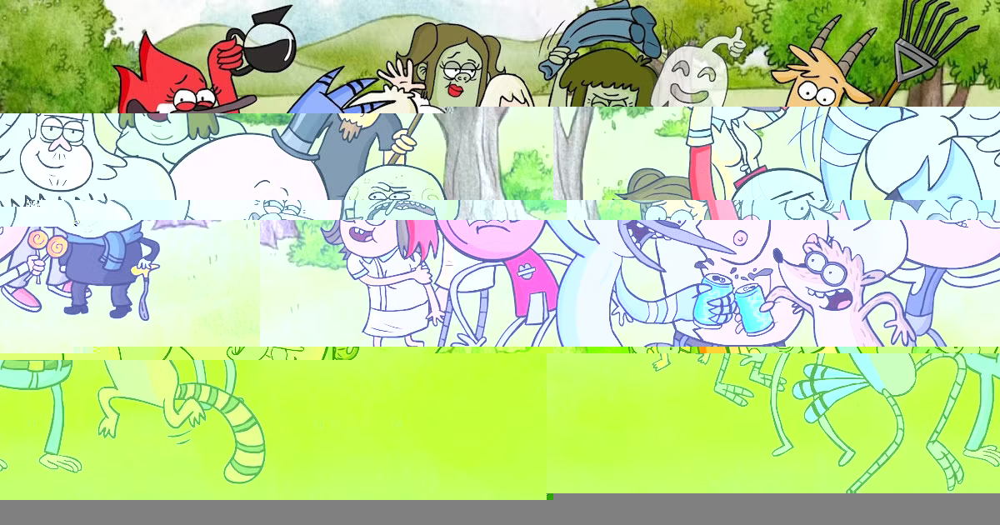
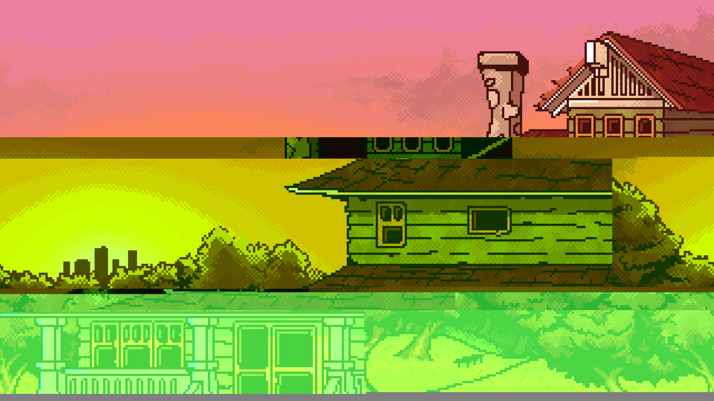
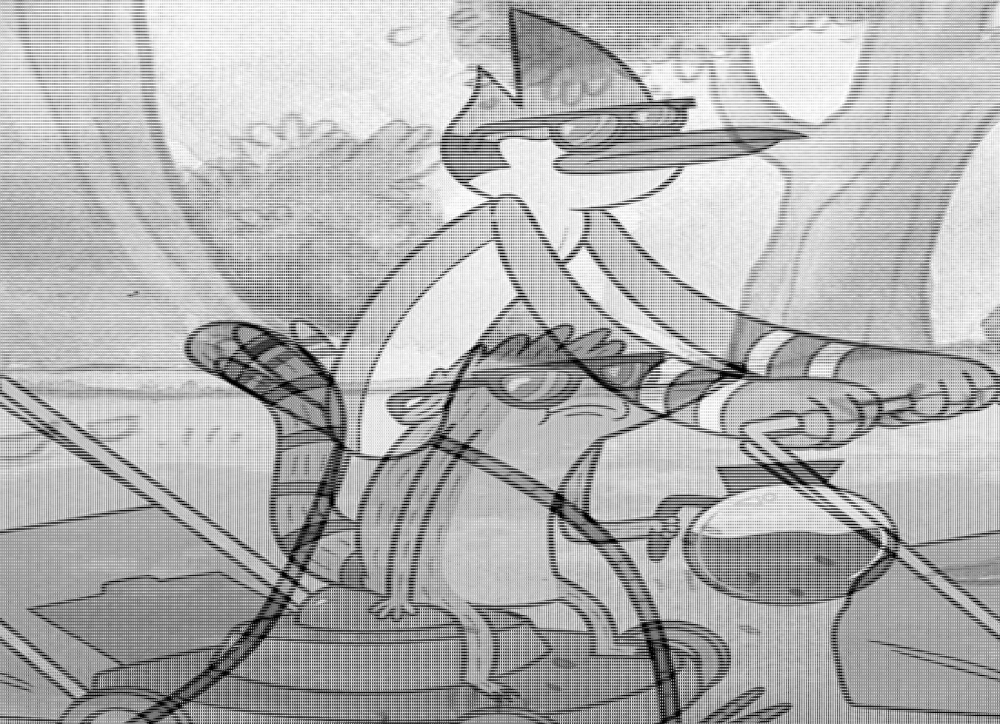

My glitches of Regular Show Images
=======


My entry for the Glitch Images assignment in ART 74. All of the images I glitched feature characters and scenes from the cartoon, "Regular Show" on Cartoon Network, which is also my favorite cartoon. I thought glitching pictures from the show would be fitting because what happens in the show resembles the chaos and unpredictability of glitched images, making a connection with the show's randomness. Published Sep 5, 2026.